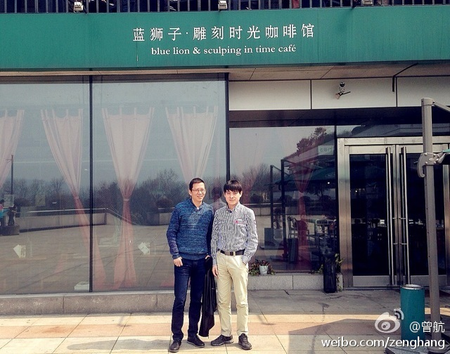
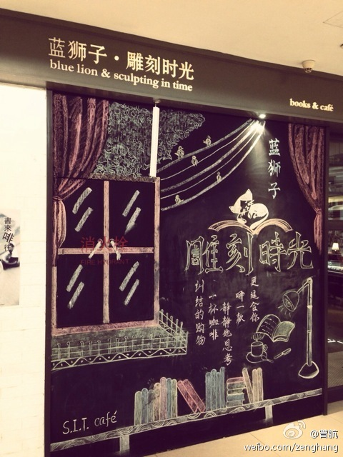
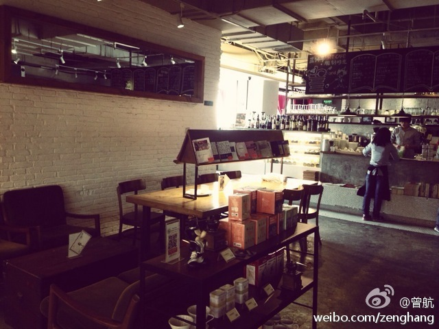

平台性服务公司，就是把作家当作最大资产，给用户提供内容之外的服务和价值。而书变成了载体和营销手段。@曾航:今天在西湖边的雕刻时光咖啡和吴晓波聊了一上午，感觉文化传媒行业新的浪潮就要到来了，蓝狮子正由一家靠卖书的公司变成一家平台性服务公司，未来的书可能会变成免费送给大家，但靠作家的人的价值变现 
通常歌手明星的粉丝是异性居多，比如男影星的票房主要靠女粉丝，女影星的票房主要靠男观众。但李宇春颠覆了这个现象，她的粉丝群以女生为主，所以上了时代周刊，并且有人撰文分析，据说是因为那个年龄段的女生粉丝们不喜欢纯粹的男人，更不喜欢纯粹的女人。- 这个结论实在有亚洲特色。
当年超女比赛结果出来的时候，也相当不解，因为我周围都是挺张靓颖的中年男，我也没看出李宇春的好。- 今天才算明白了些，有大量话语权粉丝，不代表就有用户基础。真正的粉丝是会体现在行动上，用自己的时间金钱精力去追星和维护教主。@Ada李力:通常歌手明星的粉丝是异性居多，比如男影星的票房主要靠女粉丝，女影星的票房主要靠男观众。但李宇春颠覆了这个现象，她的粉丝群以女生为主，所以上了时代周刊，并且有人撰文分析，据说是因为那个年龄段的女生粉丝们不喜欢纯粹的男人，更不喜欢纯粹的女人。- 这个结论实在有亚洲特色。
闺女再过几年也将进入青春期，我很担心的一点是她找不到自己喜爱的异性形象，就如玉米现象所折射出来的......@Ada李力:通常歌手明星的粉丝是异性居多，比如男影星的票房主要靠女粉丝，女影星的票房主要靠男观众。但李宇春颠覆了这个现象，她的粉丝群以女生为主，所以上了时代周刊，并且有人撰文分析，据说是因为那个年龄段的女生粉丝们不喜欢纯粹的男人，更不喜欢纯粹的女人。- 这个结论实在有亚洲特色。